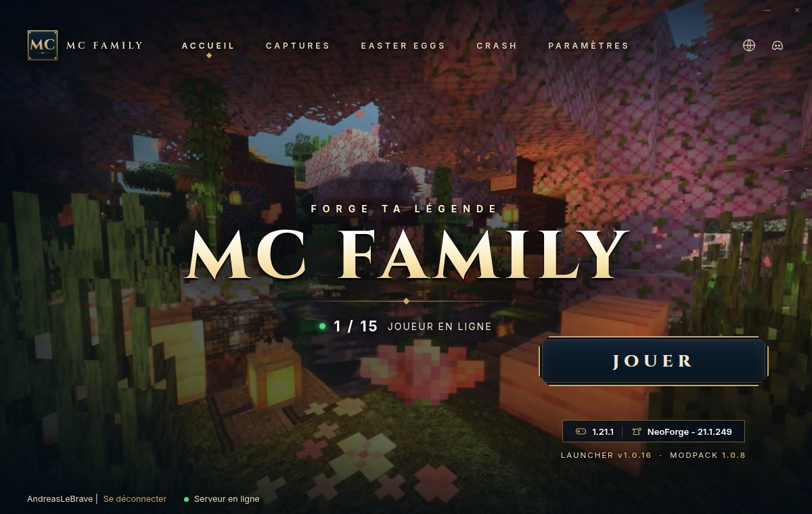
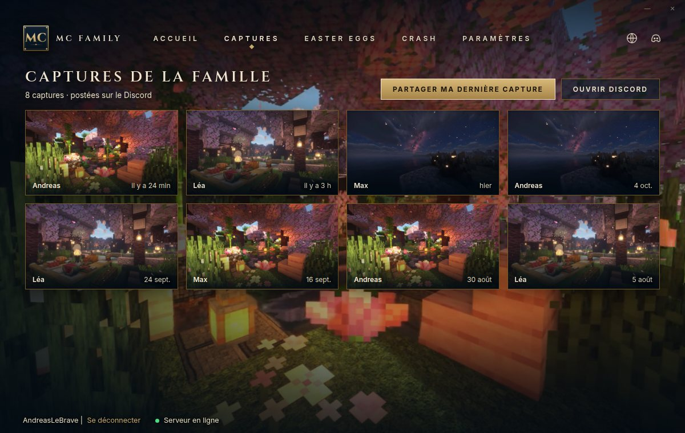
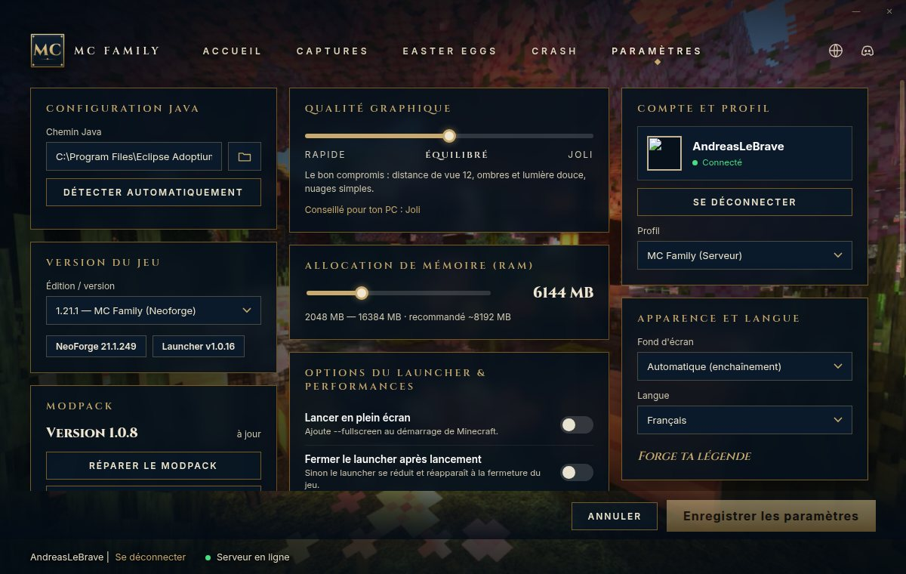
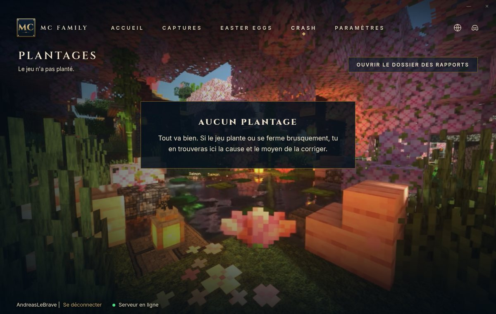

Un seul clic pour jouer : le modpack s'installe, se met à jour et te connecte au serveur. Rien d'autre à configurer.
Téléchargerpour WindowsUne interface soignée, aux couleurs de la famille.

Le bouton JOUER, le nombre de joueurs en ligne, la version du jeu et du modpack. Le serveur se connecte tout seul au lancement.

Les plus belles captures de la famille, directement dans le launcher.

Mémoire, qualité graphique, Java, modpack : tout se règle simplement. Un conseil adapté à ton PC est proposé.

Si le jeu plante, le launcher te dit pourquoi, et tu peux envoyer le rapport en un clic.
Ce que le launcher fait pour toi, sans que tu y penses.
Le modpack complet, le chargeur NeoForge et même Java sont installés à la première partie.
Le launcher et le modpack se mettent à jour tout seuls. Une nouvelle version ? Tu la reçois au prochain lancement.
Un fichier manquant ou abîmé ? « Réparer le modpack » vérifie tout et remet tout en ordre.
Une mise à jour pose problème ? Reviens à l'une des 3 versions précédentes du modpack.
Tu te connectes une seule fois, le launcher s'en souvient. Ton mot de passe n'est jamais stocké.
Au lancement du jeu, tu arrives directement sur le serveur de la famille.
Le launcher explique la cause du plantage et prépare un rapport à partager.
Des easter eggs sont planqués un peu partout. À toi de les trouver !
Compte 2 minutes, plus le temps de téléchargement du modpack.
Clique sur le bouton « Télécharger » puis lance le fichier MC-Family-Setup.exe.
Ouvre le launcher et connecte-toi avec ton compte Microsoft (celui de Minecraft).
Clique sur JOUER. La première fois, le modpack se télécharge : laisse le launcher travailler.
Un souci ? Regarde ici avant de nous écrire.
C'est normal : le launcher est fait maison et n'est pas signé par un éditeur payant. Clique sur « Informations complémentaires » puis « Exécuter quand même ».
C'est normal pour un gros fichier. Clique simplement sur « Télécharger quand même ».
Oui, un compte Microsoft avec Minecraft Java Edition. Le launcher ne permet pas de jouer sans licence.
8 Go de RAM au total sont un minimum confortable. Dans Paramètres, le launcher te recommande une valeur adaptée à ton PC.
Non. Le launcher installe automatiquement la bonne version de Java s'il n'en trouve pas.
Pour l'instant, le launcher est prévu pour Windows 10 et 11 uniquement.
Rouvre le launcher et va dans l'onglet « Crash » : la cause probable y est expliquée, et tu peux enregistrer ou copier le rapport pour nous l'envoyer. Tu peux aussi essayer « Réparer le modpack » dans Paramètres.
Comme n'importe quel logiciel : Paramètres Windows → Applications → MC Family → Désinstaller.